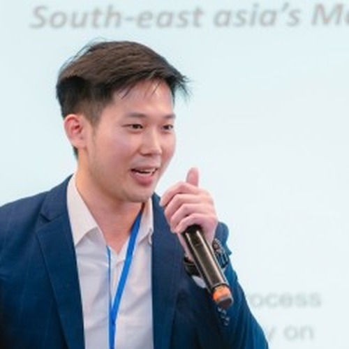
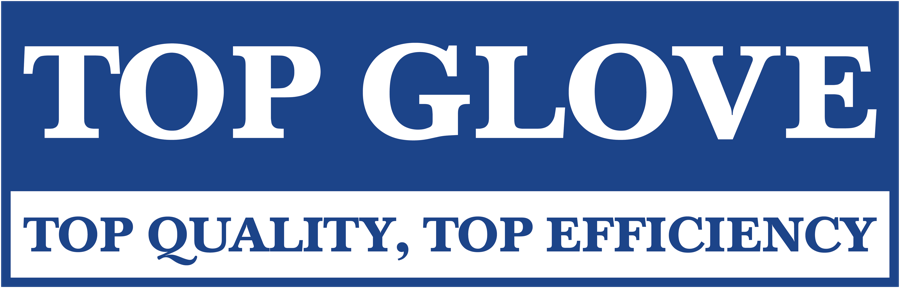

曾任职于

今天的主讲人
Landis Soam
SuDu AI 创办人兼 CEO
IT 出身。曾在 GDEX、Top Glove 等跨国企业主导工业 4.0 项目。5 年前创办 SuDu AI。
0+年 IT 经验
0+年供应链经验
0年 SAP 实施经验
0+年 SQL 与 AutoCount 经验
工业 4.0 项目
仓库 RFID生产管理系统SAP ERP预先发货通知
0+家公司受训，HRDC 认证讲师